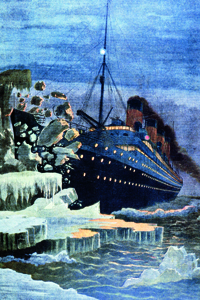
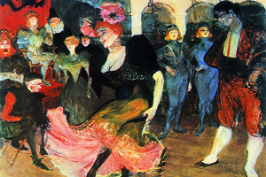
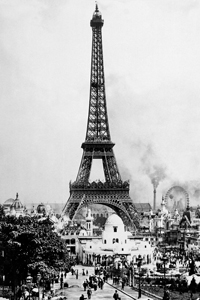

Lezione 17  La corsa alla spartizione del mondo
La corsa alla spartizione del mondo

-
140
300
-
155
440
-
155
415
-
145
470
-
200
760
-
445
600
-
270
220
-
210
470
-
190
530
-

TITANIC
1912: la tragica conclusione del primo ed ultimo viaggio del transatlantico di lusso Titanic, che affonda dopo lo scontro con un iceberg a circa due terzi del percorso tra Queenstown e New York.
L'avvenimento suscita grande emozione nell'opinione pubblica di tutto il mondo, come vediamo da questa copertina del settimanale francese Le petit Journal, e l'impatto emotivo dura ancora oggi come si vede nel fortunato film interpretato da Leonardo di Caprio.

PARIGI
Allegria, eleganza, raffinatezza: nelle movenze della ballerina Marcelle Lender, ritratta in questo dipinto di Henri Toulouse-Lautrec mentre balla una danza spagnola detta "Bolero", sono condensati tutti i caratteri che resero leggendaria la cosiddetta Belle Epoque.
PARIGI
La torre costruita da Gustave Eiffel per l'Esposizione Universale di Parigi del 1889, trecento metri di altezza in puro acciaio, è divenuta da allora il simbolo per eccellenza della Ville Lumière e di tutta la Francia: è uno dei monumenti più celebri al mondo, paragonabile alle piramidi, al Colosseo e al Partenone.GERMANIA
Tra il 1907 e il 1914 si ha un'accelerazione nella corsa agli armamenti tra le potenze europee: la Germania soffre del complesso di accerchiamento e potenzia la sua flotta, mettendo in allarme la Gran Bretagna, che fa lo stesso con la sua. Vengono costruiti nuovi tipi di navi militari: la corazzata e il sottomarino.PECHINO
1912: Scoppia la rivoluzione popolare in Cina, che porta, dopo 3000 anni di Impero, alla deposizione dell'ultimo imperatore e alla proclamazione della Repubblica cinese.
Divisioni interne tuttavia rendono il paese ingovernabile. Nel 1913 viene instaurata una dittatura, che sfocia pochi anni dopo in una guerra civile. Solo nel 1949, con la rivoluzione comunista di Mao Tse-Tung, il paese torna alla stabilità.POLO SUD
A inizio Novecento l'esplorazione del globo viene completata: nel 1909 l'americano Robert Peary raggiunge il Polo Nord, nel 1911 il norvegese Roald Amundsen il Polo Sud.
A partire da questo momento il mondo verrà concepito come uno spazio chiuso e finito.PANAMA
Nel 1914 viene inaugurato il Canale di Panama, dopo 7 anni di lavori intrapresi dagli Stati Uniti.
Nello stesso tempo si ha la creazione della Repubblica di Panama, che è indipendente ma sotto la tutela degli Stati Uniti.LIBIA
Tra il 1911 e il 1912 scoppia la guerra italo-turca per il possesso della Libia. Giolitti invia oltre 35 000 uomini. La Turchia reagisce. L'Italia manda altri uomini (fino a 100 000 unità): esce vincitrice e ottiene la Libia, ma la guerra continuerà per anni.TURCHIA
Rispettivamente nel 1912-13 e nel 1913 si combattono nella penisola balcanica due guerre, decisive nella crisi dell'Impero ottomano, responsabili dell'aggravamento della "questione d'oriente" e destabilizzanti degli equilibri dell'Europa.
La prima guerra vede schierate nella Lega balcanica Serbia, Grecia, Montenegro e Bulgaria contro la Turchia che esce sconfitta e perde quasi tutti i suoi possedimenti in Europa.
La seconda guerra vede la Bulgaria in lotta contro i suoi precedenti alleati: la Grecia e la Serbia, e, in seguito la Romania e il Montenegro. La Bulgaria è sconfitta e deve cedere la Macedonia alla Serbia e alla Grecia, la Dobrugia alla Romania, mentre la Turchia riacquista Adrianopoli.